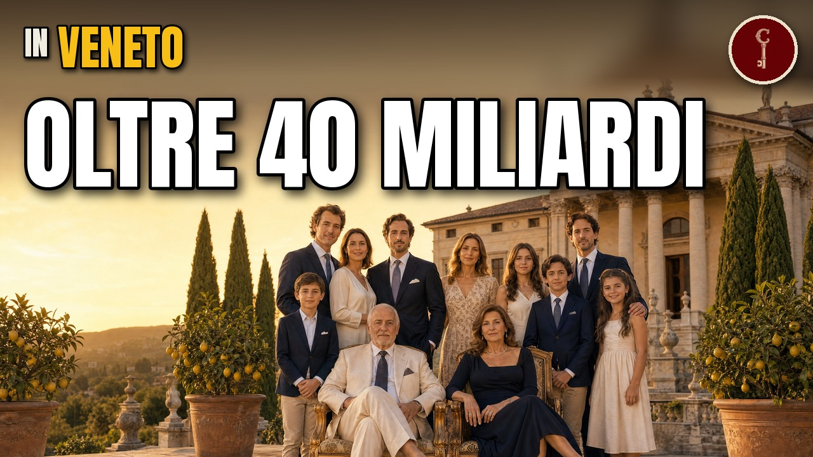

Veneto
Le 15 famiglie venete più RICCHE (i loro marchi li conosci già)

Guarda il video su YouTubeFonti della ricerca
- http://sicobas.org/2024/05/07/maxidi-sciopero-lavoratori-a-verona-lotta-contro-i-licenziamenti-per-migliori-condizioni-e-liberta-sindacale-fermo-il-magazzino-di-belfiore/
- http://www.lanotizia.news/cronaca/la-realta-oltre-i-miei-sogni-anerio-tosano-da-garzone-a-imprenditore-da-oltre-un-miliardo-di-euro-di-fatturato/
- https://acciaierievenete.com/sites/default/files/bilanci-sostenibilita/file/Acciaierie-Venete_Report-Integrato_ITA_2024.pdf
- https://andreagiacobino.com/2025/09/02/gottardo-separa-gli-asset/
- https://atoka.io/public/it/azienda/pedrollo-spa/c6af5cbbb612
- https://atoka.io/public/it/azienda/vimar-spa/a7b8c7b17f6e
- https://bebeez.it/societa-it/abafoods/
- https://borsaefinanza.it/alessandro-banzato-calcio-padova-chi-e/
- https://brendolan.net/en/company/
- https://brendolanservice.com/azienda/
- https://company-histories.com/Benetton-Group-SpA-Company-History.html
- https://company-histories.com/Diesel-SpA-Company-History.html
- https://countly.net/top-84-richest-people-in-italy-2026
- https://destinationcalcio.com/essentials/all-you-need-to-know-about-padova/
- https://distribuzionemoderna.info/en/news-of-the-day/gruppo-ali-revenue-2025-to-1-4-billion-and-a-bumper-crop-of-profits
- https://distribuzionemoderna.info/persone/gruppo-selex-alessandro-revello-e-il-nuovo-presidente
- https://distribuzionemoderna.info/successi-e-strategie/tosano-vendite-a-1-66-miliardi-10-barra-sullarea-1-nielsen
- https://emarketstorage.it/sites/default/files/comunicati/2025-03/20250305_161433.pdf
- https://en.ilsole24ore.com/art/de-rigo-ricavi-salgono-7percento-trainati-marchi-lusso-AGI2rQkC
- https://en.ilsole24ore.com/art/giovanni-mion-founder-migross-has-left-us-AIDFCiN
- https://en.ilsole24ore.com/art/il-gruppo-oniverse-chiude-2024-ricavi-35-miliardi-aumento-135percento-AG89SpzC
- https://en.ilsole24ore.com/art/otb-group-closes-2025-17-billion-revenue-record-profitability-diesel-AI4EKVSB
- https://en.ilsole24ore.com/art/otb-ricavi-2024-calo-18-miliardi-44percento-crescono-giappone-e-usa-AGv3PWxC
- https://en.ilsole24ore.com/art/veronesi-holding-gruppo-ferrero-arrives-new-managing-director-alessandro-deste-AF0GT2XC
- https://en.wikipedia.org/wiki/Acqua_Minerale_San_Benedetto
- https://en.wikipedia.org/wiki/Alessandro_Benetton
- https://en.wikipedia.org/wiki/Alessandro_Del_Piero
- https://en.wikipedia.org/wiki/Alessandro_Rossi_(textile_industrialist
- https://en.wikipedia.org/wiki/Alpinestars
- https://en.wikipedia.org/wiki/Autogrill
- https://en.wikipedia.org/wiki/Calcio_Padova
- https://en.wikipedia.org/wiki/Diesel_(company
- https://en.wikipedia.org/wiki/Edizione
- https://en.wikipedia.org/wiki/EssilorLuxottica
- https://en.wikipedia.org/wiki/Eurospin
- https://en.wikipedia.org/wiki/Giovanni_Rana
- https://en.wikipedia.org/wiki/Giuseppe_De%27Longhi
- https://en.wikipedia.org/wiki/LR_Vicenza
- https://en.wikipedia.org/wiki/Lanerossi
- https://en.wikipedia.org/wiki/Leonardo_Del_Vecchio
- https://en.wikipedia.org/wiki/Marcello_Cestaro
- https://en.wikipedia.org/wiki/Moon_Boot
- https://en.wikipedia.org/wiki/OTB_Group
- https://en.wikipedia.org/wiki/Oniverse
- https://en.wikipedia.org/wiki/Renzo_Rosso
- https://en.wikipedia.org/wiki/Sandro_Veronesi_(entrepreneur
- https://en.wikipedia.org/wiki/Schio
- https://en.wikipedia.org/wiki/Sergio_Stevanato
- https://en.wikipedia.org/wiki/Villa_Pisani
- https://fashionunited.uk/news/business/morellato-group-acquires-italian-operations-of-fossil-group/2026010885611
- https://finestresullarte.info/viaggi/10-luoghi-per-scoprire-val-leogra
- https://fliphtml5.com/nudjd/qziz/EXE_Monografia_Selex_60_anni/
- https://fondoambiente.it/luoghi/fabbrica-lanerossi-vicenza
- https://forbes.it/2019/02/22/lazienda-veneta-che-stampa-le-avventure-di-harry-potter-e-i-libri-per-il-new-york-times/
- https://forbes.it/2020/09/04/stevenato-famiglia-di-imprenditori-italiani-che-produce-le-fiale-del-vaccino-covid/
- https://forbes.it/2023/12/04/sandro-veronesi-nome-azienda-gruppo-calzedonia-oniverse/
- https://forbes.it/2024/04/02/cereal-docks-segreti-crescita-raccontati-fratelli-fanin/
- https://forbes.it/2025/07/11/immigrati-ricchi-america-classifica-3-miliardari-nati-italia
- https://forbes.it/2026/02/16/oniverse-chiude-il-2025-in-crescita-37-miliardi-di-ricavi-e-spinta-sui-mercati-esteri/
- https://forbes.it/2026/06/04/otb-compra-viktorrolf-renzo-rosso-sale-al-100-della-maison
- https://ilfattoalimentare.it/pollo-tutto-uguale-stessi-produttori.html
- https://ilfattoalimentare.it/soia-wwf-mangimi-lecitina.html
- https://informatorenavale.it/news/approvati-i-risultati-dell%e2%80%99esercizio-2024-somec-ebitda-adjusted-655-a-30-milioni-di-euro?output=pdf
- https://it.indeed.com/cmp/Maxi-Di-S.r.l.-1
- https://it.kompass.com/c/maxi-di-s-r-l/it1026807/
- https://it.wikipedia.org/wiki/A%26O
- https://it.wikipedia.org/wiki/Benetton_Group
- https://it.wikipedia.org/wiki/De%27Longhi
- https://it.wikipedia.org/wiki/Diadora
- https://it.wikipedia.org/wiki/Dpi%C3%B9
- https://it.wikipedia.org/wiki/EssilorLuxottica
- https://it.wikipedia.org/wiki/Famila
- https://it.wikipedia.org/wiki/Fassa_Bortolo
- https://it.wikipedia.org/wiki/Geox
- https://it.wikipedia.org/wiki/Gruppo_PAM
- https://it.wikipedia.org/wiki/Marcello_Cestaro
- https://it.wikipedia.org/wiki/Nice_(azienda
- https://it.wikipedia.org/wiki/Selex
- https://it.wikipedia.org/wiki/Vittorio_Cini
- https://it.wikipedia.org/wiki/Zoppas_Industries
- https://italianberry.it/news/prezzi-gdo-padova-iperlando-e-super-a038o-sul-podio-della-convenienza-1237
- https://lanerossi.com/en/pages/la-nostra-storia
- https://lexpress-franchise.com/it/franchising/migross/
- https://lexpress-franchise.com/it/notizie/aprire-un-tigota/
- https://morellatogroup.com/media_file/LECONOMIA_DEL_CORRIERE_DELLA_SERA_27012025.pdf
- https://morningsun.net/uncategorized/de-longhi-group-record-preliminary-2025-revenues-of-38-billion-up-104-at-constant-exchange-rates/
- https://now.irsap.com/?p=3718
- https://quifinanza.it/economia/benetton-edizione-bilancio-2024/916609/
- https://quifinanza.it/lifestyle/moda/essilorluxottica-dolceegabbana-rinnovo-2050/962141/
- https://registroaziende.it/azienda/gottardo-spa-padova
- https://registroaziende.it/azienda/maxi-di-srl-belfiore
- https://registroaziende.it/azienda/migross-spa-bussolengo
- https://sbn.regione.veneto.it/sebina/repository/catalogazione/immagini/21
- https://startupitalia.eu/?p=491773
- https://topaziende.quotidiano.net/?p=198136
- https://topaziende.quotidiano.net/veneto/rovigo/
- https://www.affaritaliani.it/economia/la-famiglia-veronesi-fa-shopping-nelle-marche-acquisita-villa-bucci-nuovo-investimento-nel-vino-930643.html
- https://www.affaritaliani.it/economia/manager-chi-e-sandro-veronesi-mr-calzedonia-sopravvissuto-per-miracolo-a-un-incidente-aereo.html
- https://www.affaritaliani.it/economia/marzotto-venduta-a-faber-five-per-32-mln-addio-della-famiglia-dopo-190-anni-904929.html
- https://www.agcm.it/dotcmsdoc/bollettini/2024/25-24.pdf
- https://www.aipoverona.it/le-gdo-di-verona
- https://www.alimentando.info/dario-brendolan-confermato-alla-presidenza-del-gruppo-selex/
- https://www.alimentando.info/tag/brendolan/
- https://www.ansa.it/amp/english/news/2026/02/11/essilux-posts-revenue-of-28.4-billion-in-2025-a-4-dividend_ff49ad7e-737c-41e2-abc9-4a13ccd6f6f7.html
- https://www.avvenire.it/economia/lavoro/addio-a-leonardo-del-vecchio-dallorfanotrofio-allimpero-degli-occhiali_61318
- https://www.belfiorese.it/new/index.php/2024/famila-maxidi-iperfamila-main-sponsor-della-societa-belfiorese/
- https://www.beverfood.com/gruppo-sigma-conquista-nord-est-vega-wd5025/
- https://www.beverfood.com/san-benedetto-guida-beverage-analcolico-italiano/
- https://www.bluerating.com/?p=781022
- https://www.bluerating.com/private/845666/marzotto-dynasty-ditalia
- https://www.borsaitaliana.it/borsa/notizie/teleborsa/finanza/de--longhi-perfezionato-l-incremento-della-partecipazione-all-88-nella-divisione-professionale-177_2026-10-16_TLB.html?lang=it
- https://www.businessonline.it/articoli/chi-c-dietro-eurospin-dove-sono-i-discount-e-negozi-in-italia-che-marche-di-prodotti-vendono-e-a-che-prezzi.html
- https://www.businessonline.it/news/ins-mercato-chi-sono-i-proprietari-di-questa-catena-di-discount-cosa-vendono-rapporto-qualit-prezzi_n78995.html
- https://www.businesswire.com/news/home/20260128270533/it
- https://www.businesswire.com/news/home/20260304625622/en/Stevanato-Group-Delivers-7-Revenue-Growth-9-at-Constant-Currency-for-Fiscal-Year-2025-Including-Record-Revenue-from-High-Value-Solutions-and-Expanded-Margins
- https://www.calcioefinanza.it/2025/05/09/benetton-bilancio-2024-ricavi-costi/
- https://www.calcioefinanza.it/?p=235389
- https://www.castfox.net/podcast/on-this-day-in-working-class-history-6766530/episode/19-april-1968-valdagno-textile-strike-360366
- https://www.company-histories.com/DeLonghi-SpA-Company-History.html
- https://www.consob.it/web/consob-and-its-activities/w/de-longhi-spa-azionariato
- https://www.cosedicasa.com/ristrutturare/impianti/elettrico/vimar-1945-2025-80-anni-di-energia-per-lelettricita-e-la-luce-nelle-nostre-case-24398
- https://www.creditsafe.com/business-index/en-gb/company/finbre-spa-it04335739
- https://www.creditsafe.com/business-index/en-us/company/flli-lando-spa-it03208558
- https://www.derigo.com/eng/corporate/history
- https://www.dissapore.com/notizie/anerio-tosano-fondatore-dei-supermercati-tosano-si-e-spento-a-80-anni
- https://www.dissapore.com/notizie/brazzale-produttore-di-burro-ha-creato-una-start-up-vietata-ai-minori-di-60-anni/
- https://www.dissapore.com/notizie/sergio-pedon-e-morto-addio-al-fondatore-dellazienda-di-legumi-e-cereali
- https://www.dolomitichannelsuyoutube.it/dolomiteconomia/unicomm-otto-insegne-270-store-e-sei-nuove-aperture-in-programma-nel-2025/
- https://www.ecoseven.net/flash-news/serenissima-ristorazione-in-2024-fatturato-98-a-593-milioni-ebitda-214-346-milioni/
- https://www.efanews.eu/item/36927-san-benedetto-exceeds-euro-1b-in-turnover-and-rewards-its-employees.html
- https://www.efanews.eu/item/54777-rigoni-asiago-revenue-to-grow-by-double-digits-in-2024.html
- https://www.emarketstorage.it/sites/default/files/comunicati/2026-03/20260310_178535.pdf
- https://www.emarketstorage.it/sites/default/files/comunicati/2026-03/20260312_178700.pdf
- https://www.erih.net/how-it-started/stories-about-people-biographies/biography/rossi
- https://www.erih.net/i-want-to-go-there/the-schio-vincentino-open-air-museum-of-industrial-archaeology
- https://www.esmmagazine.com/index.php/retail/gruppo-unicomm-surges-past-e3bn-in-sales-270198
- https://www.esmmagazine.com/retail/famila-sees-4-turnover-growth-in-2025-plans-to-open-20-stores-313230
- https://www.euronews.com/next/2022/05/06/autostrade-m-a-atlantia
- https://www.eurospin.it/wp-content/uploads/Brochure_Aziendale_Eurospin_2025_IT.pdf
- https://www.fassabortolo.it/wp-content/uploads/2026/01/bilancio_consolidato_Fassa_Bortolo_sintesi_2024_IT.pdf
- https://www.fassabortolo.it/wp-content/uploads/sites/2/2026/01/Bilancio_Consolidato_Fassa_Bortolo_sintesi_2025.pdf
- https://www.filodiritto.com/luomo-che-diede-il-pollo-allitalia-parti-dal-mulino-e-dalle-bambole-arrivare-allaia
- https://www.foodweb.it/2012/07/selex-brendolan-alla-presidenza/
- https://www.foodweb.it/2015/03/maxidi-e-unicomm-danno-vita-unimax/
- https://www.foodweb.it/2015/07/brendolan-riconfermato-alla-guida-selex/
- https://www.forbes.com/profile/giuseppe-delonghi/
- https://www.forbes.com/profile/sergio-stevanato/
- https://www.fruitbookmagazine.it/rumors-aldi-pronta-ad-acquisire-dpiu-maxi-di-a-un-passo-da-unicomm/
- https://www.gamberorossointernational.com/?p=563534
- https://www.gazzettaufficiale.it/eli/id/2000/10/16/C-26817/p2
- https://www.gdonews.it/2024/07/02/aia-gruppo-veronesi-nonostante-la-battaglia-contro-la-mdd-vince-la-sfida-con-la-gdo/
- https://www.gdonews.it/2024/09/01/maxi-di-selex-espansione-dellaffiliazione-e-strategie-di-crescita-nel-2024/
- https://www.gdoweek.it/unicomm-e-maxidi-danno-vita-a-unimax/
- https://www.gem.wiki/Acciaierie_Venete_Padua_steel_plant
- https://www.giovanniranausa.com/about-us/our-story.html
- https://www.glassonline.com/stevanato-group-financial-results-fourth-quarter-and-full-year-2025/
- https://www.gottardospa.it/la-nostra-storia/
- https://www.grandimolini.it/en/
- https://www.gruppopam.it/en/chi-siamo
- https://www.gruppopam.it/static/company-profile-b8b5f948cb27b30265594ca711e4bb6d.pdf
- https://www.gruppoveronesi.it/en/a-family-story
- https://www.gruppoveronesi.it/en/products
- https://www.gruppoveronesi.it/wp-content/uploads/2026/02/GruppoVeronesi_AR_2024.pdf
- https://www.ildolomiti.it/cronaca/2025/luxottica-lo-stabilimento-di-agordo-sara-in-via-leonardo-del-vecchio-1-la-strada-dedicata-allimprenditore-nel-90esimo-anniversario-dalla-nascita
- https://www.ildolomiti.it/economia/2026/acciaierie-venete-sposta-la-sede-da-borgo-a-padova-risultato-una-perdita-importante-di-gettito-fiscale-la-giunta-non-sapeva-nulla
- https://www.ilfoglio.it/cronaca/2022/03/09/news/putin-lo-zar-da-vicenza-una-leggenda-che-non-piace-piu--146469
- https://www.ilgazzettino.it/nordest/padova/pam_supermercato_veneto_storia_fatturato_dipendenti_fondatori_tito_bastianello_giancarlo_dina_gianpaolo_giol-7794290.html
- https://www.ilgiornale.it/news/aziende/edizione-oltre-10-miliardi-ricavi-benetton-altri-settori-nel-2500152.html
- https://www.ilgiornale.it/news/cronaca-locale/addio-francesco-canella-fondatore-e-presidente-dei-2276198.html
- https://www.ilgiorno.it/economia/leonardo-del-vecchio-morto-chi-e-bf43320d
- https://www.ilgiorno.it/milano/cronaca/apre-il-familia-superstore-opportunita-di-lavoro-per-tanti-giovani-5d957c97
- https://www.ilnordest.it/economia/eccellenze/benetton-storia-successo-campagne-toscani-impero-rivoluzione-l8njjgih
- https://www.ilnordest.it/economia/francesco-canella-alias-mister-ali-ha-compiuto-89-anni-jgjqdnzy
- https://www.ilnordest.it/economia/imprese/bauli-il-pandoro-degli-italiani-compie-centanni-cresciamo-ancora-e-conquistiamo-pure-lindia-oxao68o0
- https://www.ilnordest.it/economia/imprese/came-ricavi-2025-a-362-milioni-presto-nuova-sede-in-germania-uxmr68h9
- https://www.ilnordest.it/economia/imprese/cereal-docks-acquisisce-il-gruppo-padovano-di-molino-favero-l30qyva0
- https://www.ilnordest.it/economia/imprese/cereal-docks-compra-pasini-riso-e-derivati-gb0jtpj2
- https://www.ilnordest.it/economia/imprese/cereal-docks-nuovo-piano-e-fatturato-a-1-39-miliardi-xn4ln23d
- https://www.ilnordest.it/economia/imprese/de-longhi-a-3-5-miliardi-marginalita-da-record-xtgevk4j
- https://www.ilnordest.it/economia/imprese/effetto-cambi-su-rana-fatturato-a-1-3-miliardi-j6zsctyh
- https://www.ilnordest.it/economia/imprese/eurospin-discount-fatturato-2025-miliardi-kntlozxi
- https://www.ilnordest.it/economia/imprese/eurospin-oltre-i-9-milioni-di-ricavi-ma-limpennata-dei-costi-comprime-margini-e-utili-lv8qaxgj
- https://www.ilnordest.it/economia/imprese/gdo-il-carrello-cresce-a-nord-est-in-nove-superano-il-miliardo-r8jgxjds
- https://www.ilnordest.it/economia/imprese/gruppo-ali-in-crescita-ricavi-a-1-4-miliardi-v3sugn36
- https://www.ilnordest.it/economia/imprese/gruppo-gecos-pam-utile-giu-a-26-milioni-e99o8wwr
- https://www.ilnordest.it/economia/imprese/il-passaggio-generazionale-sfida-per-la-gdo-a-nord-est-r1732gzi
- https://www.ilnordest.it/economia/imprese/la-famiglia-zanatta-sale-al-69-di-tecnica-group-tt5gks93
- https://www.ilnordest.it/economia/imprese/marzotto-la-nuova-rotta-dei-favrin-qualita-acquisizioni-e-meno-debiti-c5cmo83q
- https://www.ilnordest.it/economia/imprese/rana-vola-negli-usa-con-la-terza-fabbrica-b5990hj3
- https://www.ilnordest.it/economia/imprese/unicomm-si-rafforza-nellitalia-centrale-intesa-con-etruria-retail-tdzqryq9
- https://www.ilnordest.it/economia/imprese/zignago-holding-utile-cede-del-62-percento-j46bbeeo
- https://www.ilnordest.it/economia/rigoni-di-asiago-il-fondo-italiano-di-investimento-cede-a-kharis-capital-lintera-quota-lmbiw3f1
- https://www.ilnordest.it/economia/tecnologia/smart-glasses-agordo-essilux-fm3iwvyu
- https://www.ilpopolotortona.it/lex-iperdi-e-diventato-galassia-e-ha-riaperto-le-porte-ai-clienti/
- https://www.ilpost.it/2015/10/15/calzedonia-stati-uniti/
- https://www.ilrestodelcarlino.it/archive/morto-leonardo-del-vecchio-luxottica-26bfcab3
- https://www.ilrestodelcarlino.it/economia/supermercati-ali-morto-francesco-canella-qkkhru0p
- https://www.ilrestodelcarlino.it/veneto/economia/morto-giuseppe-vicenzi-matilde-bp6wvy7b
- https://www.isvi.org/wp-content/uploads/2024/07/veronesi.pdf
- https://www.italiafruit.net/verona-citta-dellamore-e-della-gdo
- https://www.italyonthisday.com/2025/05/13maggio-nella-storia-ditalia.html
- https://www.key4biz.it/edizione-nav-2025-a-141-miliardi-7-un-terzo-dei-dipendenti-ha-meno-di-30-anni-il-50-e-donna-alessandro-benetton-guida-la-rifondazione-della-holding/577748/
- https://www.ladige.it/business-wire/gruppo-de-longhi-ricavi-preliminari-record-per-il-2025-pari-a-3-8-miliardi-di-euro-in-aumento-del-10-4-a-tassi-stmnuogi
- https://www.ladige.it/economia/la-citta-nel-mirino-dei-supermercati-veneti-il-colosso-ipertosano-punta-su-trento-nord-a1e4bcwo
- https://www.ladige.it/territori/valsugana-primiero/i-veneti-si-aggiudicano-lacciaieria-nasce-borgo-valsugana-steel-zanetti-comitato-26-gennaio-desolante-s40di49o
- https://www.largoconsumo.info/-/tigot%C3%A0-un-primato-nei-drugstore
- https://www.mariosassi.it/eurospin-cresce-lutile-aspetta/
- https://www.maxidi.it/
- https://www.maxidi.it/azienda/
- https://www.milanofinanza.it/fashion/oniverse-vola-a-3-7-miliardi-di-euro-4-8-di-ricavi-nel-2025-202602161116357995
- https://www.milanofinanza.it/fashion/stefano-e-andrea-rosso-il-futuro-di-otb-tra-continuita-ed-evoluzione-202606161459256605
- https://www.milanofinanza.it/news/acciaierie-venete-tratta-tre-impianti-in-francia-202408201933273678
- https://www.milanofinanza.it/news/bauli-gli-eredi-in-azienda-per-impegno-e-competenze-202512111807433275
- https://www.milanofinanza.it/news/brazzale-l-impresa-non-e-un-asset-ma-un-bene-di-comunita-202512061730163717
- https://www.milanofinanza.it/news/calcio-padova-oughourlian-cede-il-68-5-ad-acciaierie-venete-bonellierede-e-conte-perazzolo-gli-advisor-202601221257398977
- https://www.milanofinanza.it/news/gottardo-tigota-spazia-sugli-animali-2625010
- https://www.milanofinanza.it/news/grafica-veneta-cresce-in-uk-2720637
- https://www.milanofinanza.it/news/i-bastianello-prorogano-la-durata-dei-bond-gecos-la-cassaforte-di-famiglia-dei-proprietari-di-pam-202601261945088808
- https://www.milanofinanza.it/news/i-supermercati-ali-sacrificano-i-margini-2720768
- https://www.milanofinanza.it/news/il-traino-est-europa-2538548
- https://www.milanofinanza.it/news/le-acciaierie-valbruna-risentono-dei-prezzi-in-calo-2716656
- https://www.milanofinanza.it/news/pam-la-cassaforte-dei-bastianello-riduce-i-margini-2712587
- https://www.milanofinanza.it/news/quanto-fiele-nelle-fiale-2719534
- https://www.milanofinanza.it/news/rana-il-vero-sviluppo-nasce-da-una-sinergia-generazionale-202512021612045204
- https://www.money.it/biografia-quanto-guadagna-Giuseppe-De-Longhi
- https://www.money.it/da-bottega-a-impero-da-eur500-milioni-addio-al-re-del-pane-luigi-morato
- https://www.money.it/morellato-acquisisce-la-distribuzione-italiana-di-fossil-group-nell-accordo-anche-armani-michael-kors-e-diesel
- https://www.money.it/quanti-soldi-ha-sandro-veronesi-fondatore-di-calzedonia
- https://www.money.it/top-10-aziende-di-padova-per-fatturato
- https://www.money.it/top-10-aziende-di-venezia-per-fatturato
- https://www.money.it/top-10-aziende-di-vicenza-per-fatturato
- https://www.nonnonanni.it/en/?p=12462
- https://www.nssmag.com/it/fashion/17728/benetton-storia
- https://www.open.online/2022/06/27/leonardo-del-vecchio-luxottica-storia-self-made-man-italiano
- https://www.open.online/2026/09/24/leonardo-maria-del-vecchio-agordo-scuola-quote-milleri/
- https://www.panorama.it/attualita/economia/si-lavora-meglio-caso-gottardo-tigota
- https://www.panorama.it/panoramaditalia/olio-biocarburanti-doc
- https://www.partitaiva.it/migliori-imprese-veneto-2025/
- https://www.partitaiva.it/migliori-imprese-venezia-2026/
- https://www.pedrollo.com/en/pedrollo-fights-chinese-copies/
- https://www.quotidiano.net/economia/come-sta-andando-la-gdo-in-italia-il-rapporto-mediobanca-e-i-dati-delle-catene-a-confronto-34c70582
- https://www.quotidiano.net/economia/ultimaora/nonno-nanni-nel-2025-ricavi-1a1932a5
- https://www.reportaziende.it/aia_agricola_italiana_alimentare_spa_vr_00233470236
- https://www.reportaziende.it/gottardo_spa_pd_02466210289
- https://www.reportaziende.it/maxi_di_srl_vr_00542090238
- https://www.reportaziende.it/sinergia_spa_tv_04083220261
- https://www.rollingstone.it/cultura/news-cultura/giovanni-rana-profeta-dei-memers/378992/
- https://www.startmag.it/?p=254203
- https://www.stevanatogroup.com/en/about/our-heritage/
- https://www.texa.com/wp-content/uploads/2025/03/Company_Profile_V22_web.pdf
- https://www.tigota.it/chi-siamo
- https://www.tribunatreviso.it/cronaca/il-cuore-del-gruppo-vega-va-a-mogliano-xy2l92n3
- https://www.tribunatreviso.it/cronaca/vega-un-fatturato-da-250-milioni-mrovijsy
- https://www.ufficiocamerale.it/5898/maxi-di-srl
- https://www.ufficiocamerale.it/8454/aia-agricola-italiana-alimentare-spa
- https://www.unicomm.it/news/gruppo-unicomm-s-p-a-fatturato-2023-in-crescita-a-e-3-0506-milioni-1235-rispetto-al-2022-ebitda-e-2137-milioni-953-utile-netto-in-crescita-del-1349-a-e-100-milioni/
- https://www.vicenzi.it/en/vicenzi-group/the-group/
- https://www.websim.it/azioni/small-mid-cap/notizie/geox-anticipo-da-parte-di-lir-di-eu30m-alla-societa-20250107071530/
- https://www.youtube.com/watch?v=XS8cIQrsIug
- https://www.youtube.com/watch?v=Y45he-FbG6Q
- https://www.youtube.com/watch?v=YHNOCW6Z41k
- https://www.youtube.com/watch?v=ylJc3SUCebQ
Attribuzioni di immagini e video
Un dispositivo Telepass edizione 2022
Coelum · CC BY-SA 4.0

Coelum · CC BY-SA 4.0
Prato della Valle in Padua
AnatolyPm · CC BY-SA 4.0

AnatolyPm · CC BY-SA 4.0
Sant'Antonio (Padua) - Facade
Didier Descouens · CC BY-SA 4.0
_-_Facade.jpg){kind=link}
Didier Descouens · CC BY-SA 4.0
Serie A 1957-1958 Lanerossi Vicenza-Padova 1-2 del 9 marzo 1958 - Stadio Menti
Bruno Maruzzo · CC BY-SA 4.0

Bruno Maruzzo · CC BY-SA 4.0
Alessandro Del Piero, New York NY 2015
Retouched by Blackcat · CC BY-SA 2.0

Retouched by Blackcat · CC BY-SA 2.0
Exterior of Palazzo della Ragione (Padua)
Didier Descouens · CC BY-SA 4.0
.jpg){kind=link}
Didier Descouens · CC BY-SA 4.0
Palazzo della Loggia e piazza Brescia
This Photo was taken by Wolfgang Moroder. Feel free to use my photos, but please mention me as the author and send me a message. This image is not in the public domain. Please respect the · CC BY-SA 3.0

This Photo was taken by Wolfgang Moroder. Feel free to use my photos, but please mention me as the author and send me a message. This image is not in the public domain. Please respect the · CC BY-SA 3.0
Ghirlandina (Modena)
Commonists · CC BY-SA 4.0
.jpg){kind=link}
Commonists · CC BY-SA 4.0
Trento Piazza del Duomo 3
Zairon · CC BY-SA 4.0

Zairon · CC BY-SA 4.0
Piazza Libertà (Udine)
Udine2812 · CC BY-SA 4.0
.jpg){kind=link}
Udine2812 · CC BY-SA 4.0
CoRacFer 21 Padova Via Lazio 070314
Ivanfurlanis · CC BY-SA 3.0

Ivanfurlanis · CC BY-SA 3.0
Via Roma con Municipio (San Giovanni Lupatoto)
Threecharlie · CC BY-SA 4.0
.JPG){kind=link}
Threecharlie · CC BY-SA 4.0
Giovanni Rana 01
Alessandro Gamberi · CC BY-SA 3.0 it

Alessandro Gamberi · CC BY-SA 3.0 it
Giovanni Rana 02
Alessandro Gamberi · CC BY-SA 3.0 it

Alessandro Gamberi · CC BY-SA 3.0 it
Comune di Cologna Veneta
Ricklen · CC BY-SA 3.0

Ricklen · CC BY-SA 3.0
Moto Guzzi Airone Sport 250 (1953)
Threecharlie · CC BY-SA 3.0
.JPG){kind=link}
Threecharlie · CC BY-SA 3.0
Giovanni Rana e l'art designer Letizia Rivetti
Rodrigotebani · CC BY-SA 4.0

Rodrigotebani · CC BY-SA 4.0
Chicago-skyline-lake-burnham
[https://www.mariemillerphotography.com Marie Miller] · CC BY-SA 4.0

[https://www.mariemillerphotography.com Marie Miller] · CC BY-SA 4.0
Camisano Vicentino Piazza Umberto I
Lingtft · CC BY-SA 3.0

Lingtft · CC BY-SA 3.0
Piazza delle Erbe a Padova, veduta generale
Paolobon140 · CC BY-SA 4.0

Paolobon140 · CC BY-SA 4.0
Chiesa di Sant'Andrea Apostolo (Veggiano) 01
Marchetto da Trieste · CC BY-SA 4.0
_01.jpg){kind=link}
Marchetto da Trieste · CC BY-SA 4.0
Via Altinate in Padua (1)
Tournasol7 · CC BY 4.0
.jpg){kind=link}
Tournasol7 · CC BY 4.0
Boston skyline 1960s, including Custom House Tower and State Street Bank Building
Unknown authorUnknown author · CC BY 2.0

Unknown authorUnknown author · CC BY 2.0
Supermarket interior, 1955
Seattle Municipal Archives · CC BY 2.0

Seattle Municipal Archives · CC BY 2.0
Santuario dell'Arcella (Padova) 2
luciobocchi · CC BY-SA 4.0
_2.jpg){kind=link}
luciobocchi · CC BY-SA 4.0
Padua, Via Altenate 1
Armin Kleiner · CC BY-SA 4.0

Armin Kleiner · CC BY-SA 4.0
Acqua & Sapone Nuoro
Air fans · CC BY-SA 4.0

Air fans · CC BY-SA 4.0
31 Carpi Piazza dei Martiri
Lungoleno · CC BY-SA 4.0

Lungoleno · CC BY-SA 4.0
Villa Dionisi
Marco Soave · CC BY-SA 3.0

Marco Soave · CC BY-SA 3.0
326° kilometro Strada Statale 10 Cerea
Maza89 · CC BY-SA 3.0

Maza89 · CC BY-SA 3.0
Rinaturizzazione vallette di Cerea
Pivari.com · CC BY-SA 4.0

Pivari.com · CC BY-SA 4.0
Sts Mary & Zeno church in Cerea (5)
Tournasol7 · CC BY-SA 4.0
.jpg){kind=link}
Tournasol7 · CC BY-SA 4.0
Breganze - Vista dal campanile
Syrio · CC BY-SA 4.0

Syrio · CC BY-SA 4.0
Renzo Rosso at 83rd Venice International Film Festival-1
LucaFazPhoto · CC BY-SA 4.0

LucaFazPhoto · CC BY-SA 4.0
Villa Roberti
Giada Trincanato · CC BY-SA 4.0

Giada Trincanato · CC BY-SA 4.0
Diesel S.p.A. (54024302901)
ajay_suresh · CC BY 2.0
.jpg){kind=link}
ajay_suresh · CC BY 2.0
Diesel store
Marek Ślusarczyk (Tupungato) Photo gallery · CC BY 2.5

Marek Ślusarczyk (Tupungato) Photo gallery · CC BY 2.5
Stadio Romeo Menti from Distinti in February 2024
Pottercomuneo · CC BY-SA 4.0

Pottercomuneo · CC BY-SA 4.0
I filati della Lanerossi
Ph triskell · CC BY-SA 4.0

Ph triskell · CC BY-SA 4.0
Fabbrica Alta e Lanificio Francesco Rossi - Area ex Lanerossi, Schio
Sesamo.fede · CC BY-SA 3.0

Sesamo.fede · CC BY-SA 3.0
Stadio Romeo Menti 2022 panorama
Pottercomuneo · CC BY-SA 4.0

Pottercomuneo · CC BY-SA 4.0
Treviso - Il canale dei Buranelli
Photo uploaded by User:RicciSpeziari. Photographer: Riccardo Speziari · CC BY-SA 3.0

Photo uploaded by User:RicciSpeziari. Photographer: Riccardo Speziari · CC BY-SA 3.0
De Longhi coffee machine
MichalPL · CC BY-SA 4.0

MichalPL · CC BY-SA 4.0
Pinguino DeLonghi
Nuorese 95 · CC BY-SA 4.0

Nuorese 95 · CC BY-SA 4.0
Kenwood Chef-01ASD
Asurnipal · CC BY-SA 4.0

Asurnipal · CC BY-SA 4.0
Piazza dei Signori Treviso 2025
kallerna · CC BY-SA 4.0

kallerna · CC BY-SA 4.0
Radiatore elettrico ad olio 3
Antonio Mette · CC BY-SA 4.0

Antonio Mette · CC BY-SA 4.0
Condizionatore portatile Pinguino DeLonghi 1
Air fans · CC BY-SA 4.0

Air fans · CC BY-SA 4.0
Macchina per il caffè 2
Antonio Mette · CC BY-SA 4.0

Antonio Mette · CC BY-SA 4.0
De'Longhi 2006
Mikhail Kozlovsky · CC BY 4.0

Mikhail Kozlovsky · CC BY 4.0
Canale dei Buranelli in Treviso (1)
Krzysztof Golik · CC BY-SA 4.0
.jpg){kind=link}
Krzysztof Golik · CC BY-SA 4.0
Lotus 98T of Ayrton Senna, 1986
Dima Moroz · CC BY 2.0

Dima Moroz · CC BY 2.0
1985 European GP Senna
Jerry Lewis-Evans · CC BY-SA 2.0

Jerry Lewis-Evans · CC BY-SA 2.0
Belfiorepanorama24
MZ14 · CC BY 4.0

MZ14 · CC BY 4.0
Municipio, Belfiore
Pivari.com · CC BY-SA 4.0

Pivari.com · CC BY-SA 4.0
BelfioreCampanile24
MZ14 · CC BY 4.0

MZ14 · CC BY 4.0
Santuario della Madonna della Strà, Belfiore, Verona
Pivari.com · CC BY-SA 4.0

Pivari.com · CC BY-SA 4.0
Basilica Palladiana a Vicenza Italy and Piazza dei Signori
Federico · CC BY-SA 4.0

Federico · CC BY-SA 4.0
Chiesa dei parrocchiale di Magrè
Belllissimo · CC BY-SA 4.0

Belllissimo · CC BY-SA 4.0
Dueville, chiesa di Santa Maria 01
Syrio · CC BY-SA 4.0

Syrio · CC BY-SA 4.0
Famila Francavilla Fontana
Saggittarius A · CC BY-SA 4.0

Saggittarius A · CC BY-SA 4.0
Famila Manduria
Saggittarius A · CC BY 4.0

Saggittarius A · CC BY 4.0
Marcello Cestaro
Fabiano Zocca, modificata da me · CC BY 3.0

Fabiano Zocca, modificata da me · CC BY 3.0
Secondo scudetto schio
Lucafoxy · CC BY-SA 3.0

Lucafoxy · CC BY-SA 3.0
Tifoseria FamilaSchio
Lucafoxy · CC BY-SA 3.0

Lucafoxy · CC BY-SA 3.0
Tifoseria Famila Schio2
Lucafoxy · CC BY-SA 3.0

Lucafoxy · CC BY-SA 3.0
Schio duomo visto dal castello
No machine-readable author provided. Wanblee~commonswiki assumed (based on copyright claims). · CC BY-SA 2.5

No machine-readable author provided. Wanblee~commonswiki assumed (based on copyright claims). · CC BY-SA 2.5
Piazza delle Erbe (Verona)
Didier Descouens · CC BY-SA 4.0
.jpg){kind=link}
Didier Descouens · CC BY-SA 4.0
Eurospin Milano Bicocca
Saggittarius A · CC BY-SA 4.0

Saggittarius A · CC BY-SA 4.0
Ponte Pietra over the Adige, Verona - 2026-09-12 - 01
NorbertNagel · CC BY-SA 4.0

NorbertNagel · CC BY-SA 4.0
Verona - ponte pietra at sunset
Fabio Becchelli · CC BY-SA 3.0

Fabio Becchelli · CC BY-SA 3.0
Canal Grande from Rialto bridge SW
This Photo was taken by Wolfgang Moroder. Feel free to use my photos, but please mention me as the author and send me a message. This image is not in the public domain. Please respect the · CC BY-SA 3.0

This Photo was taken by Wolfgang Moroder. Feel free to use my photos, but please mention me as the author and send me a message. This image is not in the public domain. Please respect the · CC BY-SA 3.0
Supermercato PAM Pisa Cascine - panoramio
kajikawa · CC BY 3.0

kajikawa · CC BY 3.0
Padova - Palazzo della Ragione - Piazza delle Erbe - panoramio
jeffwarder · CC BY-SA 3.0

jeffwarder · CC BY-SA 3.0
Ponte di Rialto NE
This Photo was taken by Wolfgang Moroder. Feel free to use my photos, but please mention me as the author and send me a message. This image is not in the public domain. Please respect the · CC BY-SA 3.0

This Photo was taken by Wolfgang Moroder. Feel free to use my photos, but please mention me as the author and send me a message. This image is not in the public domain. Please respect the · CC BY-SA 3.0
Marghera R01
Marc Ryckaert · CC BY-SA 4.0

Marc Ryckaert · CC BY-SA 4.0
Piazza ferretto a mestre
Gabrielepx · CC BY-SA 3.0

Gabrielepx · CC BY-SA 3.0
Supermercato PAM Pisa Cascine - panoramio (1)
kajikawa · CC BY 3.0
.jpg){kind=link}
kajikawa · CC BY 3.0
PAM supermarket in Genova-Voltri
Андрей Романенко · CC BY-SA 4.0

Андрей Романенко · CC BY-SA 4.0
Calzedonia
Paolo Gamba · CC BY 2.0

Paolo Gamba · CC BY 2.0
Tights with seam on the inner side of the leg - bordeaux - calzedonia - side view
Tobias ToMar Maier · CC BY-SA 4.0

Tobias ToMar Maier · CC BY-SA 4.0
Ala vista dalla Sega 02
Syrio · CC BY-SA 4.0

Syrio · CC BY-SA 4.0
Oppeano - Chiesa di Vallese - 2023-09-10 21-12-35 001
Cianobix 61 · CC BY-SA 4.0

Cianobix 61 · CC BY-SA 4.0
Cantiere del Pardo fTaccola┬®DJI 0769
Fabio Planamente · CC BY-SA 4.0

Fabio Planamente · CC BY-SA 4.0
Calzedonia store interior Cala Millor Mallorca
Steffen Mokosch · CC BY-SA 4.0

Steffen Mokosch · CC BY-SA 4.0
Truck Spotting in Italy Between Modena & Verona - AIA
Rab Lawrence · CC BY 2.0

Rab Lawrence · CC BY 2.0
Lugo, Grezzana - Vista dal cimitero 01
Syrio · CC BY-SA 4.0

Syrio · CC BY-SA 4.0
ValpantenaPanorma
Adert · CC BY-SA 3.0

Adert · CC BY-SA 3.0
NIMH 2011-3625 luchtfoto van Leeuwarden, Friesland, Nederland, circa 1920-1940
Unknown photographerUnknown photographer · CC BY-SA 4.0

Unknown photographerUnknown photographer · CC BY-SA 4.0
Piazza dei Signori e Palazzo dei Trecento
Didier Descouens · CC BY-SA 4.0

Didier Descouens · CC BY-SA 4.0
Luciano Benetton
Paul Katzenberger · CC BY-SA 4.0

Paul Katzenberger · CC BY-SA 4.0
04 United Colors of Benetton shop, Parma, Italy - ベネトン
Marek Ślusarczyk (Tupungato) Photo gallery · CC BY 3.0

Marek Ślusarczyk (Tupungato) Photo gallery · CC BY 3.0
Alessandro Benetton 01
Gorup de Besanez · CC BY-SA 4.0

Gorup de Besanez · CC BY-SA 4.0
Milano - cortile di Brera
andrea castelli from Italy · CC BY 2.0

andrea castelli from Italy · CC BY 2.0
Agordo, veduta da Via Pragrande
Marchetto da Trieste · CC BY-SA 4.0

Marchetto da Trieste · CC BY-SA 4.0
Agordo (BL) Italy village
Circolo fotografico agordino · CC BY-SA 3.0
_Italy_village.jpg){kind=link}
Circolo fotografico agordino · CC BY-SA 3.0
Agordo 2019
Tiia Monto · CC BY-SA 3.0

Tiia Monto · CC BY-SA 3.0
Agordo di sera
Campedel Stefano · CC BY-SA 3.0

Campedel Stefano · CC BY-SA 3.0
Piazza Matteotti Cerea
Maza89 · CC BY-SA 3.0

Maza89 · CC BY-SA 3.0
Scene ricostruite
Alcune scene sono ricostruite con l'intelligenza artificiale (41 immagini e 18 clip). Non sono documenti né fotografie d'epoca.
Mappe
- Confini amministrativi italiani (openpolis/geojson-italy, dati ISTAT) · CC BY 4.0 · fonte